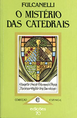

|
Por Fulcanelli
Segundo a versão mais difundida,
o termo "gótico" deriva de Godos,
o povo germânico que habitava a Escandinávia. Porém,
em sua obra O Mistério das Catedrais, Fulcanelli
nos apresenta uma outra versão. A palavra "gótico"
seria uma deformação fonética de Argoth (ou
Art Goth), uma linguagem restrita utilizada somente por Iniciados
em Ocultismo. Embora historicamente essa versão seja incoerente,
é uma visão interessante de um grande alquimista.
Confira o trecho do livro que disserta sobre essa
possibilidade:
O Mistério
das Catedrais – Cap. III
Alguns
pretenderam erradamente que provinha dos Godos, antigo povo da
Germania; outros julgaram que se chamava assim a esta forma de
arte, cujas originalidade e extrema singularidade provocam escândalo
nos séculos XVII e XVIII, por zombaria, atribuindo-lhe
o sentido de bárbaro: tal é a opinião da
Escola Clássica, imbuída dos princípios decadentes
do Renascimento.
A verdade, que sai da boca do povo, no entanto,
manteve e conservou a expressão Arte Gótica, apesar
dos esforços da Academia para substituí-la por Arte
Ogival. Há ai uma razão obscura que deveria obrigar
a refletir os nossos lingüistas, sempre à espreita
das etimologias. Qual a razão por que tão poucos
lexicólogos acertaram? Simplesmente porque a explicação
deve ser antes procurada na origem cabalística da palavra,
mais do que na sua raiz literal.
Alguns autores perspicazes e menos superficiais,
espantados pela semelhança que existe entre gótico
e goético pensaram que devia haver uma estreita relação
entre a arte gótica e a arte goética ou mágica.
Para nós, arte gótica é apenas
uma deformação ortográfica da palavra argótica
cuja homofonia é perfeita, de acordo com a lei fonética
que rege, em todas as línguas, sem ter em conta a ortografia,
a cabala tradicional. A catedral é uma obra de art goth
ou de argot. Ora, os dicionários definem o argot como sendo
uma linguagem particular a todos os indivíduos que tem
interesse em comunicar os seus pensamentos sem serem compreendidos
pelos os que o rodeiam. É, pois, uma cabala falada. Os
argotiers, os que utilizam essa linguagem, são descendentes
herméticos dos argo-nautas, que viajavam no navio Argo,
falavam a língua argótica – a nossa língua
verde – navegando em direção as margens
afortunadas de Colcos para conquistarem o famoso Tosão
de Ouro. Ainda hoje se diz de um homem inteligente mas também
muito astuto: "ele sabe tudo, entende o argot".
Todos os Iniciados se exprimiam em argot, tanto os vagabundos
da Corte dos Milagres – com o poeta Villon à cabeça
– como os Frimasons ou franco-mações da Idade
Média, hospedeiros do bom Deus, que edificaram as obras-primas
góticas que hoje admiramos. Eles próprios, estes
Nautas construtores, conheciam a rota do Jardim da Hespérides...
Ainda nos nossos dias os humildes, os miseráveis,
os desprezados, os insubmissos, ávidos de liberdade e de
independência, os proscritos, os errantes e os nômades
falam argot, esse dialeto maldito, banido da alta sociedade, dos
nobres que o são tão pouco, dos burgueses satisfeitos
e bem pensantes, espojados no arminho da sua ignorância
e da sua presunção. O argot permanece a linguagem
de uma minoria de indivíduos vivendo à margem das
leis estabelecidas, das convenções, dos hábitos,
do protocolo, aos quais se aplica o epíteto de vadios,
ou seja, de videntes e, mais expressivo ainda, de Filhos
ou Descendentes do Sol. A arte gótica é,
com efeito, a art got ou cot, a arte da Luz ou do Espírito.
Pensar-se-á que são apenas simples
jogos de palavras. E nós concordamos de boa vontade. O
essencial é que guiem a nossa fé para uma certeza,
para a verdade positiva e científica, chave do mistério
religioso, e que não a mantenham errante no labirinto caprichoso
da imaginação. Aqui em baixo não existe acaso,
nem coincidência, nem relação fortuita; tudo
está previsto, ordenado, regulado e não nos pertence
modificar a nosso bel-prazer a vontade imperscrutável do
Destino. Se o sentido usual das palavras nos não permite
qualquer descoberta capaz de nos elevar, de nos instruir, de nos
aproximar de Criador, o vocabulário torna-se inútil.
O verbo, que assegura ao homem a incontestável superioridade,
a soberania que ele possui sobre tudo o que vive, perde a sua
nobreza, a sua grandeza, a sua beleza e não é mais
do que uma aflitiva vaidade. Ora, a língua, instrumento,
do espírito, vive por ela própria, embora não
seja mais do que o reflexo da Idéia universal. Nada inventamos,
nada criamos. Tudo existe em tudo. O nosso microcosmos é
apenas uma partícula ínfima, animada, pensante,
mais ou menos imperfeita, do macrocosmos. O que nós julgamos
descobrir apenas pelo esforço da nossa inteligência
existe já em qualquer parte. É a fé que nos
faz pressentir o que existe; é a revelação
que nos dá a prova absoluta. Muitas vezes passamos ao lado
do fenômeno, até mesmo do milagre, sem dar por ele,
cegos e surdos. Quantas maravilhas, quantas coisas insuspeitadas
descobriríamos se soubéssemos dissecar as palavras,
quebrar-lhes a casca e libertar a o espírito, divina luz
que eles encerram! Jesus exprimia-se apenas por parábolas;
poderemos nos negar a verdade que elas ensinam? E, na conversação
corrente, não serão os equívocos, os pouco
mais ou menos, os trocadilhos ou assonâncias que caracterizam
as pessoas de espírito, felizes por escaparem à
tirania da letra e mostrando-se, à sua maneira, cabalistas
sem o saberem?
Acrescentemos, por fim, que o argot é uma
das forças derivadas da Língua dos Pássaros,
mãe e decana de todas as outras, a língua dos filósofos
e dos diplomatas. É o conhecimento dela que Jesus revela
aos seus apóstolos, enviando-lhes o seu espírito,
o Espírito Santo.
É ela que ensina o mistério das coisas
e desvenda as verdades mais recônditas. Os antigos Incas
chamavam-na Língua da Corte porque era familiar
aos diplomatas, a quem fornecia a chave de uma dupla ciência:
a ciência sagrada e a ciência profana. Na Idade Média,
qualificavam-na antes da edificação da torre de
Babel, causa da perversão e, para a maioria, do esquecimento
total desse idioma sagrado. Hoje, fora do argot, encontramos as
suas características nalgumas línguas locais como
o picardo, o provençal, etc. e no dialeto dos ciganos.
A mitologia pretende que o célebre adivinho
Tirésias tenha possuído perfeito conhecimento da
Língua dos Pássaros, que Minerva lhe teria ensinado,
como deusa da Sabedoria. Ele partilhava-a, diz-se, com Tales de
Mileto, Melampus e Apolônio de Tiana, personagens fictícios
cujos nomes falam eloqüentemente na ciência que nos
ocupa e bastante claramente para que tenhamos necessidade de os
analisar nestas páginas.
Agradecimentos
à Heloísa Schakal

|